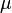

Conversion of units is the conversion between different units of measurement for the same quantity , typically through multiplicative conversion factors .
Techniques [ edit ] Process [ edit ] The process of conversion depends on the specific situation and the intended purpose. This may be governed by regulation, contract , Technical specifications or other published standards . Engineering judgment may include such factors as:
Some conversions from one system of units to another need to be exact, without increasing or decreasing the precision of the first measurement. This is sometimes called soft conversion . It does not involve changing the physical configuration of the item being measured.
By contrast, a hard conversion or an adaptive conversion may not be exactly equivalent. It changes the measurement to convenient and workable numbers and units in the new system. It sometimes involves a slightly different configuration, or size substitution, of the item. Nominal values are sometimes allowed and used.
Multiplication factors [ edit ] Conversion between units in the metric system can be discerned by their prefixes (for example, 1 kilogram = 1000 grams, 1 milligram = 0.001 grams) and are thus not listed in this article. Exceptions are made if the unit is commonly known by another name (for example, 1 micron = 10−6 metre).
Table ordering [ edit ] Within each table, the units are listed alphabetically, and the SI units (base or derived) are highlighted.
Tables of conversion factors [ edit ] This article gives lists of conversion factors for each of a number of physical quantities, which are listed in the index. For each physical quantity, a number of different units (some only of historical interest) are shown and expressed in terms of the corresponding SI unit.
Legend
Symbol
Definition
≡
exactly equal to
≈
approximately equal to
digits indicates that digits repeat infinitely (e.g. 8.294369 corresponds to 8.294369 369 369 369 … )
(H)
of chiefly historical interest
Length
Name of unit
Symbol
Definition
Relation to SI units
ångström Å
≡ 1× 10−10 m
≡ 0.1 nm
astronomical unit AU
≡ 149597 870 700 m ≈ Distance from Earth to Sun
≡ 149597 870 700 m [ 1]
barleycorn (H)
= ⅓ in (see note above about rounding)
≈ 8.46 × 10−3 m
bohr, atomic unit of length
a0
≡ Bohr radius of hydrogen
≈ 5.2917720859× 10−11 ± 3.6× 10−20 m [ 2]
cable length (imperial)
≡ 608 ft
≈ 185.3184 m
cable length (International)
≡ 1/10 nmi
≡ 185.2 m
cable length (US)
≡ 720 ft
= 219.456 m
chain (Gunter's ; Surveyor's)ch
≡ 66 ft (US) ≡ 4 rods [ 3]
≈ 20.11684 m
cubit (H)
≡ Distance from fingers to elbow ≈ 18 in
≈ 0.5 m
ell (H)ell
≡ 45 in [ 4]
= 1.143 m
fathom fm
≡ 6 ft [ 4]
= 1.8288 m
fermi fm
≡ 1× 10−15 m [ 4]
≡ 1× 10−15 m
finger
≡ 7/8 in
= 0.022225 m
finger (cloth)
≡ 4½ in
= 0.1143 m
foot (Benoît) (H)ft (Ben)
≈ 0.304799735 m
foot (Cape) (H)
Legally defined as 1.033 English feet in 1859
≈ 0.314858 m
foot (Clarke's) (H)
ft (Cla)
≈ 0.3047972654 m
foot (Indian) (H)
ft Ind
≈ 0.304799514 m
foot (International)
ft
≡ 0.3048 m ≡ 1/3 yd ≡ 12 inches
≡ 0.3048 m
foot (Sear's) (H)
ft (Sear)
≈ 0.30479947 m
foot (US Survey)
ft (US)
≡ 1200 ⁄3937 [ 5]
≈ 0.30480061 m
french ; charriereF
≡ 1 ⁄3
= 0.3 × 10−3 m
furlong fur
≡ 10 chains = 660 ft = 220 yd [ 4]
= 201.168 m
hand
≡ 4 in [ 4]
≡ 0.1016 m
inch (International)in
≡ 2.54 cm ≡ 1/36 yd ≡ 1/12 ft
≡ .0254 m
league (land)lea
≈ 1 hour walk, Currently defined in US as 3 Statute miles,[ 3]
≈ 4828 m
light-day
≡ 24 light-hours
≡ 2.59020683712× 1013 m
light-hour
≡ 60 light-minutes
≡ 1.0792528488× 1012 m
light-minute
≡ 60 light-seconds
≡ 1.798754748× 1010 m
light-second
≡ Distance light travels in one second in vacuum
≡ 299792 458 m
light-year ly
≡ Distance light travels in vacuum in 365.25 days [ 6]
= 9.4607304725808× 1015 m
line ln
≡ 1/12 in [ 7]
= 0.002116 m
link (Gunter's; Surveyor's)lnk
≡ 1/100 ch [ 4]
= 0.201168 m
link (Ramsden's; Engineer's)
lnk
≡ 1 ft [ 4]
= 0.3048 m
metre (SI base unit )(meter) m
≡ Distance light travels in 1 ⁄299792 458 [ 8] 1 ⁄10000 000
≡ 1 m
mickey
≡ 1 ⁄200
= 1.27× 10−4 m
micron µ
≡ 1× 10−6 m
mil; thou
mil
≡ 1× 10−3 in
≡ 2.54× 10−5 m
mil (Sweden and Norway)mil
≡ 10 km
= 10000 m
mile (geographical) (H)≡ 6082 ft
= 1853.7936 m
mile (international)mi
≡ 80 chains ≡ 5280 ft ≡ 1760 yd
≡ 1609.344 m
mile (tactical or data)≡ 6000 ft
≡ 1828.8 m
mile (telegraph) (H)
mi
≡ 6087 ft
= 1855.3176 m
mile (US Survey)
mi
≡ 5280 US Survey feet ≡ (5280 × 1200 3937
≈ 1609.347 219 m
nail (cloth)
≡ 2¼ in [ 4]
= 0.057 15 m
nanometer
nm
≡ 1× 10−9 m
≡ 1× 10−9 m
nautical league
NL; nl
≡ 3 nmi [ 4]
= 5556 m
nautical mile (Admiralty)
NM (Adm); nmi (Adm)
= 6080 ft
= 1853.184 m
nautical mile (international)NM; nmi
≡ 1852 m [ 9]
≡ 1852 m
nautical mile (US pre 1954)
≡ 1853.248 m
≡ 1853.248 m
pace
≡ 2.5 ft [ 4]
= 0.762 m
palm
≡ 3 in [ 4]
= 0.0762 m
parsec pc
Distance of star with par sec
≈ 3.085 677 82× 1016 ± 6× 106 m [ 10]
pica
≡ 12 points
Dependent on point measures.
point (American, English) [ 11] [ 12] pt
≡ 1/72.272 in
≈ 0.000 351 450 m
point (Didot; European) [ 12] [ 13]
pt
≡ 1/12 × 1/72 of pied du roi ;
≈ 0.000 375 97 m;0.000 375 939 85 m
point (PostScript ) [ 11]
pt
≡ 1/72 in
= 0.000 352 7 m
point (TeX ) [ 11]
pt
≡ 1/72.27 in
= 0.000 351 4598 m
quarter
≡ ¼ yd
= 0.2286 m
rod ; pole; perch (H)rd
≡ 16½ ft
= 5.0292 m
rope (H)rope
≡ 20 ft [ 4]
= 6.096 m
span (H)
≡ 9 in [ 4]
= 0.2286 m
spat [ 14] ≡ 1× 1012 m
stick (H)
≡ 2 in
= 0.0508 m
stigma; bicron (picometre )
pm
≡ 1× 10−12 m
twip twp
≡ 1/1440 in
= 1.7638 × 10−5 m
x unit ; siegbahnxu
≈ 1.0021× 10−13 m [ 4]
yard (International)yd
≡ 0.9144 m [ 5]
≡ 0.9144 m
Area
Name of unit
Symbol
Definition
Relation to SI units
acre (international)ac
≡ 1 ch × 10 ch = 4840 sq yd
≡ 4 046.856 4224 m2
acre (U. S. survey)ac
≡ 10 sq ch = 4840 sq yd, also 43560 sq ft.
≈ 4 046.873 m2 [ 15]
are a
≡ 100 m2
= 100 m2
barn b
≡ 10−28 m2
= 10−28 m2
barony
≡ 4000 ac
≈ 1.618 742× 107 m2
board
bd
≡ 1 in × 1 ft
= 7.741 92× 10−3 m2
boiler horsepower equivalent direct radiation
bhp EDR
≡ (1 ft2 ) (1 bhp) / (240 BTUIT /h)
≈ 12.958 174 m2
circular inch
circ in
≡ π/4 sq in
≈ 5.067 075× 10−4 m2
circular mil; circular thou
circ mil
≡ π/4 mil2
≈ 5.067 075× 10−10 m2
cord
≡ 192 bd
= 1.486 448 64 m2
dunam
≡ 1 000 m2
= 1 000 m2
guntha
≡ 121 sq yd
≈ 101.17 m2
hectare ha
≡ 10 000 m2
≡ 10 000 m2
hide
≈ 120 ac (variable)
≈ 5× 105 m2
rood
ro
≡ ¼ ac
= 1 011.714 1056 m2
section
≡ 1 mi × 1 mi
= 2.589 988 110 336× 106 m2
shed
≡ 10−52 m2
= 10−52 m2
square (roofing)
≡ 10 ft × 10 ft
= 9.290 304 m2
square chain (international)
sq ch
≡ 66 ft × 66 ft = 1/10 ac
≡ 404.685 642 24 m2
square chain (US Survey)
sq ch
≡ 66 ft(US) × 66 ft(US) = 1/10 ac
≈ 404.687 3 m2
square foot sq ft
≡ 1 ft × 1 ft
≡ 9.290 304× 10−2 m2
square foot (US Survey)
sq ft
≡ 1 ft (US) × 1 ft (US)
≈ 9.290 341 161 327 49× 10−2 m2
square inch sq in
≡ 1 in × 1 in
≡ 6.4516× 10−4 m2
square kilometre km2
≡ 1 km × 1 km
= 106 m2
square link (Gunter's)(International)
sq lnk
≡ 1 lnk × 1 lnk ≡ 0.66 ft × 0.66 ft
= 4.046 856 4224× 10−2 m2
square link (Gunter's)(US Survey)
sq lnk
≡ 1 lnk × 1 lnk ≡ 0.66 ft(US) × 0.66 ft(US)
≈ 4.046 872× 10−2 m2
square link (Ramsden's)
sq lnk
≡ 1 lnk × 1 lnk ≡ 1 ft × 1 ft
= 0.09290304 m2
square metre (SI unit)m2
≡ 1 m × 1 m
= 1 m2
square mil; square thou
sq mil
≡ 1 mil × 1 mil
= 6.4516× 10−10 m2
square mile
sq mi
≡ 1 mi × 1 mi
= 2.589 988 110 336× 106 m2
square mile (US Survey)
sq mi
≡ 1 mi (US) × 1 mi (US)
≈ 2.589 998 47× 106 m2
square rod/pole/perch
sq rd
≡ 1 rd × 1 rd
= 25.292 852 64 m2
square yard (International)sq yd
≡ 1 yd × 1 yd
≡ 0.836 127 36 m2
stremma
≡ 1 000 m2
= 1 000 m2
township
≡ 36 sq mi (US)
≈ 9.323 994× 107 m2
yardland
≈ 30 ac
≈ 1.2× 105 m2
Volume
Name of unit
Symbol
Definition
Relation to SI units
acre-foot ac ft
≡ 1 ac x 1 ft = 43 560 ft3
= 1 233.481 837 547 52 m3
acre-inch
≡ 1 ac × 1 in
= 102.790 153 128 96 m3
barrel (imperial)bl (imp)
≡ 36 gal (imp)
= 0.163 659 24 m3
barrel (petroleum)
bl; bbl
≡ 42 gal (US)
= 0.158 987 294 928 m3
barrel (US dry)
bl (US)
≡ 105 qt (US) = 105/32 bu (US lvl)
= 0.115 628 198 985 075 m3
barrel (US fluid)
fl bl (US)
≡ 31½ gal (US)
= 0.119 240 471 196 m3
board-foot fbm
≡ 144 cu in
≡ 2.359 737 216× 10−3 m3
bucket (imperial)
bkt
≡ 4 gal (imp)
= 0.018 184 36 m3
bushel (imperial)bu (imp)
≡ 8 gal (imp)
= 0.036 368 72 m3
bushel (US dry heaped)
bu (US)
≡ 1 ¼ bu (US lvl)
= 0.044 048 837 7086 m3
bushel (US dry level)
bu (US lvl)
≡ 2 150.42 cu in
= 0.035 239 070 166 88 m3
butt , pipe
≡ 126 gal (wine)
= 0.476 961 884 784 m3
coomb
≡ 4 bu (imp)
= 0.145 474 88 m3
cord (firewood )
≡ 8 ft × 4 ft × 4 ft
= 3.624 556 363 776 m3
cord-foot
≡ 16 cu ft
= 0.453 069 545 472 m3
cubic fathom
cu fm
≡ 1 fm × 1 fm × 1 fm
= 6.116 438 863 872 m3
cubic foot cu ft
≡ 1 ft × 1 ft × 1 ft
≡ 0.028 316 846 592 m3
cubic inch
cu in
≡ 1 in × 1 in × 1 in
≡ 16.387 064× 10−6 m3
cubic metre (SI unit)m3
≡ 1 m × 1 m × 1 m
≡ 1 m3
cubic mile
cu mi
≡ 1 mi × 1 mi × 1 mi
≡ 4 168 181 825.440 579 584 m3
cubic yard
cu yd
≡ 27 cu ft
≡ 0.764 554 857 984 m3
cup (breakfast)
≡ 10 fl oz (imp)
= 284.130 625× 10−6 m3
cup (Canadian)
c (CA)
≡ 8 fl oz (imp)
= 227.3045× 10−6 m3
cup (metric)
c
≡ 250.0× 10−6 m3
= 250.0× 10−6 m3
cup (US customary)
c (US)
≡ 8 US fl oz ≡ 1/16 gal (US)
= 236.588 2365× 10−6 m3
cup (US food nutrition labeling)
c (US)
≡ 240 mL[ 16]
= 2.4× 10−4 m3
dash (imperial)
≡ 1/384 gi (imp) = ½ pinch (imp)
= 369.961 751 302 08 3 × 10−9 m3
dash (US)
≡ 1/96 US fl oz = ½ US pinch
= 308.057 599 609 375× 10−9 m3
dessertspoon (imperial)
≡ 1/12 gi (imp)
= 11.838 776 0416 × 10−6 m3
drop (imperial)gtt
≡ 1/288 fl oz (imp)
= 98.656 467 013 8 × 10−9 m3
drop (imperial) (alt)
gtt
≡ 1/1 824 gi (imp)
≈ 77.886 684× 10−9 m3
drop (medical)
≡ 0.9964/12 ml
= 83.03 × 10−9 m3
drop (medical)
≡ 1/12 ml
= 83.3 × 10−9 m3
drop (metric)
≡ 1/20 mL
= 50.0× 10−9 m3
drop (US)
gtt
≡ 1/360 US fl oz
= 82.148 693 22916 × 10−9 m3
drop (US) (alt)
gtt
≡ 1/456 US fl oz
≈ 64.854 231 496 71× 10−9 m3
drop (US) (alt)
gtt
≡ 1/576 US fl oz
≈ 51.342 933 268 23× 10−9 m3
fifth
≡ 1/5 US gal
= 757.082 3568× 10−6 m3
firkin
≡ 9 gal (imp)
= 0.040 914 81 m3
fluid drachm (imperial)fl dr
≡ ⅛ fl oz (imp)
= 3.551 632 8125× 10−6 m3
fluid dram (US); US fluidramfl dr
≡ ⅛ US fl oz
= 3.696 691 195 3125× 10−6 m3
fluid scruple (imperial)fl s
≡ 1/24 fl oz (imp)
= 1.183 877 60416 × 10−6 m3
gallon (beer)beer gal
≡ 282 cu in
= 4.621 152 048× 10−3 m3
gallon (imperial)
gal (imp)
≡ 4.546 09 L
≡ 4.546 09× 10−3 m3
gallon (US dry)
gal (US)
≡ ⅛ bu (US lvl)
= 4.404 883 770 86× 10−3 m3
gallon (US fluid; Wine)
gal (US)
≡ 231 cu in
≡ 3.785 411 784× 10−3 m3
gill (imperial); Noggingi (imp); nog
≡ 5 fl oz (imp)
= 142.065 3125× 10−6 m3
gill (US)
gi (US)
≡ 4 US fl oz
= 118.294 118 25× 10−6 m3
hogshead (imperial)hhd (imp)
≡ 2 bl (imp)
= 0.327 318 48 m3
hogshead (US)
hhd (US)
≡ 2 fl bl (US)
= 0.238 480 942 392 m3
jigger (bartending)
≡ 1½ US fl oz
≈ 44.36× 10−6 m3
kilderkin
≡ 18 gal (imp)
= 0.081 829 62 m3
lambda λ
≡ 1 mm3
= 1× 10−9 m3
last
≡ 80 bu (imp)
= 2.909 4976 m3
litre (liter) L
≡ 1 dm3 [ 17]
≡ 0.001 m3
load
≡ 50 cu ft
= 1.415 842 3296 m3
minim (imperial)min
≡ 1/480 fl oz (imp) = 1/60 fl dr (imp)
= 59.193 880 208 3 × 10−9 m3
minim (US)
min
≡ 1/480 US fl oz = 1/60 US fl dr
= 61.611 519 921 875× 10−9 m3
ounce (fluid imperial)fl oz (imp)
≡ 1/160 gal (imp)
≡ 28.413 0625× 10−6 m3
ounce (fluid US customary)US fl oz
≡ 1/128 gal (US)
≡ 29.573 529 5625× 10−6 m3
ounce (fluid US food nutrition labeling)
US fl oz
≡ 30 mL[ 16]
≡ 3× 10−5 m3
peck (imperial)pk
≡ 2 gal (imp)
= 9.092 18× 10−3 m3
peck (US dry)
pk
≡ ¼ US lvl bu
= 8.809 767 541 72× 10−3 m3
perch per
≡ 16½ ft × 1½ ft × 1 ft
= 0.700 841 953 152 m3
pinch (imperial)
≡ 1/192 gi (imp) = ⅛ tsp (imp)
= 739.923 502 60416 × 10−9 m3
pinch (US)
≡ 1/48 US fl oz = ⅛ US tsp
= 616.115 199 218 75× 10−9 m3
pint (imperial)pt (imp)
≡ ⅛ gal (imp)
= 568.261 25× 10−6 m3
pint (US dry)
pt (US dry)
≡ 1/64 bu (US lvl) ≡ ⅛ gal (US dry)
= 550.610 471 3575× 10−6 m3
pint (US fluid)
pt (US fl)
≡ ⅛ gal (US)
= 473.176 473× 10−6 m3
pony
≡ 3/4 US fl oz
= 22.180 147 171 875× 10−6 m3
pottle; quartern
≡ ½ gal (imp) = 80 fl oz (imp)
= 2.273 045× 10−3 m3
quart (imperial)qt (imp)
≡ ¼ gal (imp)
= 1.136 5225× 10−3 m3
quart (US dry)
qt (US)
≡ 1/32 bu (US lvl) = ¼ gal (US dry)
= 1.101 220 942 715× 10−3 m3
quart (US fluid)
qt (US)
≡ ¼ gal (US fl)
= 946.352 946× 10−6 m3
quarter; pail
≡ 8 bu (imp)
= 0.290 949 76 m3
register ton
≡ 100 cu ft
= 2.831 684 6592 m3
sack (imperial); bag
≡ 3 bu (imp)
= 0.109 106 16 m3 [citation needed
sack (US)
≡ 3 bu (US lvl)
= 0.105 717 210 500 64 m3
seam
≡ 8 bu (US lvl)
= 0.281 912 561 335 04 m3 [citation needed
shot (US)
usually 1.5 US fl oz[ 14]
≈ 44× 10−6 m3
strike (imperial)
≡ 2 bu (imp)
= 0.072 737 44 m3
strike (US)
≡ 2 bu (US lvl)
= 0.070 478 140 333 76 m3
tablespoon (Australian metric)
≡ 20.0× 10−6 m3
tablespoon (Canadian)
tbsp
≡ ½ fl oz (imp)
= 14.206 531 25× 10−6 m3
tablespoon (imperial)
tbsp
≡ 5/8 fl oz (imp)
= 17.758 164 0625× 10−6 m3
tablespoon (metric)
≡ 15.0× 10−6 m3
tablespoon (US customary)
tbsp
≡ ½ US fl oz
= 14.786 764 7825× 10−6 m3
tablespoon (US food nutrition labeling)
tbsp
≡ 15 mL[ 16]
= 1.5× 10−5 m3
teaspoon (Canadian)tsp
≡ 1/6 fl oz (imp)
= 4.735 510 416 × 10−6 m3
teaspoon (imperial)
tsp
≡ 1/24 gi (imp)
= 5.919 388 02083 × 10−6 m3
teaspoon (metric)
≡ 5.0× 10−6 m3
= 5.0× 10−6 m3
teaspoon (US customary)
tsp
≡ 1/6 US fl oz
= 4.928 921 595× 10−6 m3
teaspoon (US food nutrition labeling)
tsp
≡ 5 mL[ 16]
= 5× 10−6 m3
timber foot
≡ 1 cu ft
= 0.028 316 846 592 m3
ton (displacement)
≡ 35 cu ft
= 0.991 089 630 72 m3
ton (freight)
≡ 40 cu ft
= 1.132 673 863 68 m3
ton (water)
≡ 28 bu (imp)
= 1.018 324 16 m3
tun
≡ 252 gal (wine)
= 0.953 923 769 568 m3
wey (US)
≡ 40 bu (US lvl)
= 1.409 562 806 6752 m3
Plane angle [ edit ]
Plane angle
Name of unit
Symbol
Definition
Relation to SI units
angular mil µ
≡ 2π/6400 rad
≈ 0.981 748× 10−3 rad
arcminute ; MOA'
≡ 1°/60
≈ 0.290 888× 10−3 rad
arcsecond "
≡ 1°/3600
≈ 4.848 137× 10−6 rad
centesimal minute of arc '
≡ 1 grad/100
≈ 0.157 080× 10−3 rad
centesimal second of arc "
≡ 1 grad/(10 000)
≈ 1.570 796× 10−6 rad
degree (of arc) °
≡ 1/360 of a revolution ≡ π/180 rad
≈ 17.453 293× 10−3 rad
grad ; gradian; gongrad
≡ 1/400 of a revolution ≡ 2π/400 rad ≡ 0.9°
≈ 15.707 963× 10−3 rad
octant
≡ 45°
≈ 0.785 398 rad
quadrant
≡ 90°
≈ 1.570 796 rad
radian (SI unit)rad
The angle subtended at the center of a circle by an arc whose length is equal to the circle's radius. One full revolution encompasses 2π radians.
= 1 rad
sextant
≡ 60°
≈ 1.047 198 rad
sign
≡ 30°
≈ 0.523 599 rad
Solid angle [ edit ]
Solid angle
Name of unit
Symbol
Definition
Relation to SI units
square degree deg²; sq.deg.; (°)²
≡ (π/180)² sr ≈ 0.30462× 10−3 sr
steradian (SI unit)sr
The solid angle subtended at the center of a sphere of radius r by a portion of the surface of the sphere having an area r2 . A sphere encompasses 4π sr.[ 14]
= 1 sr
Notes:
See Weight for detail of mass/weight distinction and conversion.
Avoirdupois is a system of mass based on a pound of 16 ounces, while Troy weight is the system of mass where 12 troy ounces equals one troy pound.In this table, the unit gee is used to denote standard gravity in order to avoid confusion with the "g" symbol for grams.
In physics , the pound of mass is sometimes written lbm to distinguish it from the pound-force (lbf ). It should not be read as the mongrel unit "pound metre".
Mass
Name of unit
Symbol
Definition
Relation to SI units
atomic mass unit, unified u; AMU
≈ 1.660 538 73× 10−27 ± 1.3× 10−36 kg
atomic unit of mass , electron rest massme
≈ 9.109 382 15× 10−31 ± 45× 10−39 kg [ 18]
bag (coffee )
≡ 60 kg
= 60 kg
bag (Portland cement )
≡ 94 lb av
= 42.637 682 78 kg
barge
≡ 22½ sh tn
= 20 411.656 65 kg
carat kt
≡ 3 1/6 gr
≈ 205.196 548 333 mg
carat (metric)ct
≡ 200 mg
= 200 mg
clove
≡ 8 lb av
= 3.628 738 96 kg
crith
≈ 89.9349 mg
dalton Da
≈ 1.660 902 10× 10−27 ± 1.3× 10−36 kg
dram (apothecary; troy )dr t
≡ 60 gr
= 3.887 9346 g
dram (avoirdupois)dr av
≡ 27 11/32 gr
= 1.771 845 195 3125 g
electronvolt eV
≡ 1 eV (energy unit) / c2
= 1.7826× 10−36 kg
gamma γ
≡ 1 μg
= 1 μg
grain gr
≡ 1/7000 lb av
≡ 64.798 91 mg
grave G
grave was the original name of the kilogram
≡ 1 kg
hundredweight (long)long cwt or cwt
≡ 112 lb av
= 50.802 345 44 kg
hundredweight (short); centalsh cwt
≡ 100 lb av
= 45.359 237 kg
kilogram (kilogramme) kg
≡ mass of the prototype near Paris (≈ mass of 1L of water)
≡ 1 kg (SI base unit )[ 8]
kip kip
≡ 1000 lb av
= 453.592 37 kg
mark
≡ 8 oz t
= 248.827 8144 g
mite
≡ 1/20 gr
= 3.239 9455 mg
mite (metric)
≡ 1/20 g
= 50 mg
ounce (apothecary; troy) oz t
≡ 1/12 lb t
= 31.103 4768 g
ounce (avoirdupois )oz av
≡ 1/16 lb
= 28.349 523 125 g
ounce (US food nutrition labeling)
oz
≡ 28 g[ 16]
= 28 g
pennyweight dwt; pwt
≡ 1/20 oz t
= 1.555 173 84 g
point
≡ 1/100 ct
= 2 mg
pound lb
≡ slug·ft/s2
= 0.45359237 kg
pound (avoirdupois) lb av
≡ 0.453 592 37 kg = 7000 grains
≡ 0.453 592 37 kg
pound (metric)
≡ 500 g
= 500 g
pound (troy) lb t
≡ 5 760 grains
= 0.373 241 7216 kg
quarter (imperial)
≡ 1/4 long cwt = 2 st = 28 lb av
= 12.700 586 36 kg
quarter (informal)
≡ ¼ short tn
= 226.796 185 kg
quarter, long (informal)
≡ ¼ long tn
= 254.011 7272 kg
quintal (metric)q
≡ 100 kg
= 100 kg
scruple (apothecary )s ap
≡ 20 gr
= 1.295 9782 g
sheet
≡ 1/700 lb av
= 647.9891 mg
slug ; geepound; hylslug
≡ 1 gee × 1 lb av × 1 s2 /ft
≈ 14.593 903 kg
stone st
≡ 14 lb av
= 6.350 293 18 kg
ton, assay (long)AT
≡ 1 mg × 1 long tn ÷ 1 oz t
≈ 32.666 667 g
ton, assay (short)AT
≡ 1 mg × 1 sh tn ÷ 1 oz t
≈ 29.166 667 g
ton, long long tn or ton
≡ 2 240 lb
= 1 016.046 9088 kg
ton, short sh tn
≡ 2 000 lb
= 907.184 74 kg
tonne (mts unit)t
≡ 1 000 kg
= 1 000 kg
wey
≡ 252 lb = 18 st
= 114.305 277 24 kg (variants exist)
Zentner
Ztr.
Definitions vary; see [ 19] [ 14]
Density [ edit ]
Density
Name of unit
Symbol
Definition
Relation to SI units
gram per millilitre
g/mL
≡ g/mL
= 1,000 kg/m3
kilogram per cubic metre (SI unit)
kg/m3
≡ kg/m3
= 1 kg/m3
kilogram per litre
kg/L
≡ kg/L
= 1,000 kg/m3
ounce (avoirdupois) per cubic foot
oz/ft3
≡ oz/ft3
≈ 1.001153961 kg/m3
ounce (avoirdupois) per cubic inch
oz/in3
≡ oz/in3
≈ 1.729994044× 103 kg/m3
ounce (avoirdupois) per gallon (imperial)
oz/gal
≡ oz/gal
≈ 6.236023291 kg/m3
ounce (avoirdupois) per gallon (US fluid)
oz/gal
≡ oz/gal
≈ 7.489151707 kg/m3
pound (avoirdupois) per cubic foot
lb/ft3
≡ lb/ft3
≈ 16.01846337 kg/m3
pound (avoirdupois) per cubic inch
lb/in3
≡ lb/in3
≈ 2.767990471× 104 kg/m3
pound (avoirdupois) per gallon (imperial)
lb/gal
≡ lb/gal
≈ 99.77637266 kg/m3
pound (avoirdupois) per gallon (US fluid)
lb/gal
≡ lb/gal
≈ 119.8264273 kg/m3
slug per cubic footslug/ft3
≡ slug/ft3
≈ 515.3788184 kg/m3
Time
Name of unit
Symbol
Definition
Relation to SI units
atomic unit of time au
≡ a0 /(α ·c)
≈ 2.418 884 254× 10−17 s
Callippic cycle
≡ 441 mo (hollow) + 499 mo (full) = 76 a of 365.25 d
= 2.398 3776× 109 s
century c
≡ 100 a (see below for definition of year length)
= 100 years
day d
= 24 h
= 1440 min = 86400 s
day (sidereal)d
≡ Time needed for the Earth to rotate once around its axis, determined from successive transits of a very distant astronomical object across an observer's meridian (International Celestial Reference Frame )
≈ 86 164.1 s
decade dec
≡ 10 a (see below for definition of year length)
= 10 years
fortnight fn
≡ 2 wk
= 1 209 600 s
helek ≡ 1/1 080 h
= 3.3 s
Hipparchic cycle
≡ 4 Callippic cycles - 1 d
= 9.593 424× 109 s
hour h
≡ 60 min
= 3 600 s
jiffy j
≡ 1/60 s
= .016 s
jiffy (alternate)
ja
≡ 1/100 s
= 10 ms
ke (quarter of an hour)
≡ ¼ h = 1/96 d
= 60 × 60 / 4 s = 900 s = 60 / 4 min = 15 min
ke (traditional)
≡ 1/100 d
= 24 × 60 × 60 / 100 s = 864 s = 24 * 60 / 100 min = 14.4 min
lustre; lustrum
≡ 5 a of 365 d
= 1.5768× 108 s
Metonic cycle ; enneadecaeteris
≡ 110 mo (hollow) + 125 mo (full) = 6940 d ≈ 19 a
= 5.996 16× 108 s
millennium
≡ 1 000 a (see below for definition of year length)
= 1000 years
milliday md
≡ 1/1 000 d
= 24 × 60 × 60 / 1 000 s = 86.4 s
minute min
≡ 60 s, due to leap seconds sometimes 59 s or 61 s,
= 60 s
moment
≡ 90 s
= 90 s
month (full)mo
≡ 30 d[ 20]
= 2 592 000 s
month (Greg. av.)mo
Average Gregorian month = 1 a (Gregorian average) / 12 = 365.242 5 d / 12 = 30.436 875 d
≈ 2.6297× 106 s
month (hollow)mo
≡ 29 d[ 20]
= 2 505 600 s
month (synodic)mo
Cycle time of moon phases ≈ 29.530 589 d (Average)
≈ 2.551× 106 s
octaeteris
= 48 mo (full) + 48 mo (hollow) + 3 mo (full)[ 21] [ 22]
= 2.524 608× 108 s
Planck time
≡ (G ℏ c 5 )½
≈ 1.351 211 868× 10−43 s
second s
time of 9 192 631 770 periods of the radiation corresponding to the transition between the 2 hyperfine levels of the ground state of the caesium 133 atom at 0 K[ 8]
(SI base unit )
shake
≡ 10−8 s
= 10 ns
sigma
≡ 10−6 s
= 1 μs
Sothic cycle
≡ 1 461 a of 365 d
= 4.607 4096× 1010 s
svedberg S
≡ 10−13 s
= 100 fs
week wk
≡ 7 d
= 168 h = 10 080 min = 604 800 s
year (common)a, y, or yr
365 d
= 31 536 000 s[ 23]
year (Gregorian)a, y, or yr
= 365.2425 d average, calculated from common years (365 d) plus leap years (366 d) on most years divisible by 4. See leap year for details.
= 31 556 952 s
year (Julian)
a, y, or yr
= 365.25 d average, calculated from common years (365 d) plus one leap year (366 d) every four years
= 31 557 600 s
year (leap) a, y, or yr
366 d
= 31 622 400 s[ 23]
year (mean tropical) a, y, or yr
Conceptually, length of time it takes for the Sun to return to the same position in the cycle of seasons[ Converter 1]
≈ 365.24219 d, each day being 86,400 SI seconds[ 24] ≈ 31 556 925 s
year (sidereal)a, y, or yr
≡ time taken for Sun to return to the same position with respect to the stars of the celestial sphere
≈ 365.256 363 d ≈ 31 558 149.7632 s
Where UTC is observed, the length of time units longer than 1 s may increase or decrease by 1 s if a leap second occurs during the time interval of interest.
Frequency [ edit ]
Frequency
Name of unit
Symbol
Definition
Relation to SI units
hertz (SI unit)Hz
≡ Number of cycles per second
= 1 Hz = 1/s
revolutions per minute rpm
≡ One unit rpm equals one rotation completed around a fixed axis in one minute of time.
≈ 0.104719755 rad/s
Speed or velocity [ edit ]
Speed
Name of unit
Symbol
Definition
Relation to SI units
foot per hour fph
≡ 1 ft/h
≈ 8.466 667× 10−5 m/s
foot per minute fpm
≡ 1 ft/min
= 5.08× 10−3 m/s
foot per second fps
≡ 1 ft/s
= 3.048× 10−1 m/s
furlong per fortnight
≡ furlong/fortnight
≈ 1.663 095× 10−4 m/s
inch per hour iph
≡ 1 in/hr
≈ 7.05 556× 10−6 m/s
inch per minute ipm
≡ 1 in/min
≈ 4.23 333× 10−4 m/s
inch per second ips
≡ 1 in/s
= 2.54× 10−2 m/s
kilometre per hour km/h
≡ 1 km/h
= 1/3.6 m/s ≈ 2.777 778× 10−1 m/s
knot kn
≡ 1 nmi /h = 1.852 km/h
≈ 0.514 444 m/s
knot (Admiralty)kn
≡ 1 NM (Adm)/h = 1.853 184 km/h[citation needed
= 0.514 773 m/s
mach number M Ratio of the speed to the speed of sound in the medium. Varies especially with temperature. About 1225 km/h (761 mph) in air at sea level to about 1062 km/h (660 mph) at jet altitudes (12,200 metres (40,000 ft)).[ 25]
≈ 340 to 295 m/s for aircraft
metre per second (SI unit)m/s
≡ 1 m/s
= 1 m/s
mile per hour mph
≡ 1 mi/h
= 0.447 04 m/s
mile per minute mpm
≡ 1 mi/min
= 26.8224 m/s
mile per second mps
≡ 1 mi/s
= 1 609.344 m/s
speed of light in vacuumc ≡ 299 792 458 m/s
= 299 792 458 m/s
speed of sound in airs Varies especially with temperature. About 1225 km/h (761 mph) in air at sea level to about 1062 km/h (660 mph) at jet altitudes.
≈ 340 to 295 m/s at aircraft altitudes
A velocity consists of a speed combined with a direction; the speed part of the velocity takes units of speed.
Flow (volume) [ edit ]
Flow
Name of unit
Symbol
Definition
Relation to SI units
cubic foot per minute
CFM[citation needed
≡ 1 ft3 /min
= 4.719474432× 10−4 m3 /s
cubic foot per second
ft3 /s
≡ 1 ft3 /s
= 0.028316846592 m3 /s
cubic inch per minute
in3 /min
≡ 1 in3 /min
= 2.731177 3 × 10−7 m3 /s
cubic inch per second
in3 /s
≡ 1 in3 /s
= 1.6387064× 10−5 m3 /s
cubic metre per second (SI unit)
m3 /s
≡ 1 m3 /s
= 1 m3 /s
gallon (US fluid) per day
GPD[citation needed
≡ 1 gal/d
= 4.38126363 8 × 10−8 m3 /s
gallon (US fluid) per hour
GPH[citation needed
≡ 1 gal/h
= 1.05150327 3 × 10−6 m3 /s
gallon (US fluid) per minute
GPM[citation needed
≡ 1 gal/min
= 6.30901964× 10−5 m3 /s
litre per minute
LPM[citation needed
≡ 1 L/min
= 1.6 × 10−5 m3 /s
Acceleration [ edit ]
Force
Name of unit
Symbol
Definition
Relation to SI units
atomic unit of force ≡ me ·α 2 ·c 2 /a0
≈ 8.238 722 06× 10−8 N [ 26]
dyne (cgs unit )dyn
≡ g·cm/s2
= 10−5 N
kilogram-force ; kilopond; grave -forcekgf; kp; Gf
≡ g × 1 kg
= 9.806 65 N
kip ; kip-forcekip; kipf; klbf
≡ g × 1 000 lb
= 4.448 221 615 2605× 103 N
milligrave -force, gravet-forcemGf; gf
≡ 'g '
= 9.806 65 mN
newton (SI unit)N
A force capable of giving a mass of one kg an acceleration of one metre per second, per second.[ 27]
= 1 N = 1 kg·m/s2
ounce-force ozf
≡ g × 1 oz
= 0.278 013 850 953 781 25 N
pound-force lbf ≡ g × 1 lb
= 4.448 221 615 2605 N
poundal pdl
≡ 1 lb·ft/s2
= 0.138 254 954 376 N
sthene (mts unit)
sn
≡ 1 t·m/s2
= 1× 103 N
ton -forcetnf
≡ g × 1 sh tn
= 8.896 443 230 521× 103 N
See also: Conversion between weight (force) and mass
Pressure or mechanical stress [ edit ]
Pressure
Name of unit
Symbol
Definition
Relation to SI units
atmosphere (standard)atm
≡ 101 325 Pa [ 28]
atmosphere (technical)at
≡ 1 kgf/cm2
= 9.806 65× 104 Pa [ 28]
bar bar
≡ 105 Pa
barye (cgs unit )
≡ 1 dyn/cm2
= 0.1 Pa
centimetre of mercury
cmHg
≡ 13 595.1 kg/m3 × 1 cm × g
≈ 1.333 22× 103 Pa [ 28]
centimetre of water (4 °C)
cmH2 O
≈ 999.972 kg/m3 × 1 cm × g
≈ 98.063 8 Pa [ 28]
foot of mercury (conventional)ftHg
≡ 13 595.1 kg/m3 × 1 ft × g
≈ 40.636 66× 103 Pa [ 28]
foot of water (39.2 °F)ftH2 O
≈ 999.972 kg/m3 × 1 ft × g
≈ 2.988 98× 103 Pa [ 28]
inch of mercury (conventional)inHg
≡ 13 595.1 kg/m3 × 1 in × g
≈ 3.386 389× 103 Pa [ 28]
inch of water (39.2 °F)inH2 O
≈ 999.972 kg/m3 × 1 in × g
≈ 249.082 Pa [ 28]
kilogram-force per square millimetre
kgf/mm2
≡ 1 kgf/mm2
= 9.806 65× 106 Pa [ 28]
kip per square inch ksi
≡ 1 kipf/sq in
≈ 6.894 757× 106 Pa [ 28]
micron (micrometre) of mercury
mHg
≡ 13 595.1 kg/m3 × 1 m × g ≈ 0.001 torr
≈ 0.133 322 4 Pa [ 28]
millimetre of mercury mmHg ≡ 13 595.1 kg/m3 × 1 mm × g ≈ 1 torr
≈ 133.3224 Pa [ 28]
millimetre of water (3.98 °C)
mmH2 O
≈ 999.972 kg/m3 × 1 mm × g = 0.999 972 kgf/m2
= 9.806 38 Pa
pascal (SI unit)Pa
≡ N/m2 = kg/(m·s2 )
= 1 Pa [ 29]
pièze (mts unit)
pz
≡ 1 000 kg/m·s2
= 1× 103 Pa = 1 kPa
pound per square foot psf
≡ 1 lbf/ft2
≈ 47.880 26 Pa [ 28]
pound per square inch psi
≡ 1 lbf/in2
≈ 6.894 757× 103 Pa [ 28]
poundal per square foot pdl/sq ft
≡ 1 pdl/sq ft
≈ 1.488 164 Pa [ 28]
short ton per square foot
≡ 1 sh tn × g / 1 sq ft
≈ 95.760 518× 103 Pa
torr torr
≡ 101 325/760 Pa
≈ 133.322 4 Pa [ 28]
Torque or moment of force [ edit ]
Torque
Name of unit
Symbol
Definition
Relation to SI units
foot-pound force ft lbf
≡ g × 1 lb × 1 ft
= 1.355 817 948 331 4004 N·m
foot -poundalft pdl
≡ 1 lb·ft2 /s2
= 4.214 011 009 380 48× 10−2 N·m
inch-pound force in lbf
≡ g × 1 lb × 1 in
= 0.112 984 829 027 6167 N·m
metre kilogram m kg
≡ N × m / g
≈ 0.101 971 621 N·m
Newton metre (SI unit)N·m
≡ N × m = kg·m2 /s2
= 1 N·m
Energy
Name of unit
Symbol
Definition
Relation to SI units
barrel of oil equivalent boe
≈ 5.8× 106 BTU59 °F
≈ 6.12× 109 J
British thermal unit (ISO)BTUISO
≡ 1.0545× 103 J
= 1.0545× 103 J
British thermal unit (International Table)
BTUIT
= 1.055 055 852 62× 103 J
British thermal unit (mean)
BTUmean
≈ 1.055 87× 103 J
British thermal unit (thermochemical)
BTUth
≈ 1.054 350× 103 J
British thermal unit (39 °F)
BTU39 °F
≈ 1.059 67× 103 J
British thermal unit (59 °F)
BTU59 °F
≡ 1.054 804× 103 J
= 1.054 804× 103 J
British thermal unit (60 °F)
BTU60 °F
≈ 1.054 68× 103 J
British thermal unit (63 °F)
BTU63 °F
≈ 1.0546× 103 J
calorie (International Table)calIT
≡ 4.1868 J
= 4.1868 J
calorie (mean)
calmean
1 ⁄100 ≈ 4.190 02 J
calorie (thermochemical)
calth
≡ 4.184 J
= 4.184 J
Calorie (US; FDA )
Cal
≡ 1 kcal
= 1000 cal = 4184 J
calorie (3.98 °C)
cal3.98 °C
≈ 4.2045 J
calorie (15 °C)
cal15 °C
≡ 4.1855 J
= 4.1855 J
calorie (20 °C)
cal20 °C
≈ 4.1819 J
Celsius heat unit (International Table)CHUIT
≡ 1 BTUIT × 1 K/°R
= 1.899 100 534 716× 103 J
cubic centimetre of atmosphere ; standard cubic centimetre
cc atm; scc
≡ 1 atm × 1 cm3
= 0.101 325 J
cubic foot of atmosphere; standard cubic foot
cu ft atm; scf
≡ 1 atm × 1 ft3
= 2.869 204 480 9344× 103 J
cubic foot of natural gas
≡ 1 000 BTUIT
= 1.055 055 852 62× 106 J
cubic yard of atmosphere; standard cubic yard
cu yd atm; scy
≡ 1 atm × 1 yd3
= 77.468 520 985 2288× 103 J
electronvolt eV
≡ e
≈ 1.602 177 33× 10−19 ± 4.9× 10−26 J
erg (cgs unit )erg
≡ 1 g·cm2 /s2
= 10−7 J
foot-pound force ft lbf
≡ g × 1 lb × 1 ft
= 1.355 817 948 331 4004 J
foot-poundal
ft pdl
≡ 1 lb·ft2 /s2
= 4.214 011 009 380 48× 10−2 J
gallon -atmosphere (imperial)imp gal atm
≡ 1 atm × 1 gal (imp)
= 460.632 569 25 J
gallon-atmosphere (US)
US gal atm
≡ 1 atm × 1 gal (US)
= 383.556 849 0138 J
hartree , atomic unit of energy Eh
≡ me ·α 2 ·c 2 (= 2 Ry)
≈ 4.359 744× 10−18 J
horsepower-hour hp·h
≡ 1 hp × 1 h
= 2.684 519 537 696 172 792× 106 J
inch-pound force in lbf
≡ g × 1 lb × 1 in
= 0.112 984 829 027 6167 J
joule (SI unit)J
The work done when a force of one newton moves the point of its application a distance of one metre in the direction of the force.[ 27]
= 1 J = 1 m·N = 1 kg·m2 /s2 = 1 C·V = 1 W·s
kilocalorie; large calorie
kcal; Cal
≡ 1 000 calIT
= 4.1868× 103 J
kilowatt-hour ; Board of Trade UnitkW·h; B.O.T.U.
≡ 1 kW × 1 h
= 3.6× 106 J
litre -atmosphere l atm; sl
≡ 1 atm × 1 L
= 101.325 J
quad
≡ 1015 BTUIT
= 1.055 055 852 62× 1018 J
rydberg Ry
≡ R∞ ℎ ·c
≈ 2.179 872× 10−18 J
therm (E.C.)
≡ 100 000 BTUIT
= 105.505 585 262× 106 J
therm (US)
≡ 100 000 BTU59 °F
= 105.4804× 106 J
thermie
th
≡ 1 McalIT
= 4.1868× 106 J
ton of coal equivalent TCE
≡ 7 Gcalth
= 29.288× 109 J
ton of oil equivalent TOE
≡ 10 Gcalth
= 41.84× 109 J
ton of TNT tTNT
≡ 1 Gcalth
= 4.184× 109 J
Power or heat flow rate [ edit ]
Power
Name of unit
Symbol
Definition
Relation to SI units
atmosphere -cubic centimetre per minute atm ccm
≡ 1 atm × 1 cm3 /min
= 1.688 75× 10−3 W
atmosphere-cubic centimetre per second
atm ccs
≡ 1 atm × 1 cm3 /s
= 0.101 325 W
atmosphere-cubic foot per hour
atm cfh
≡ 1 atm × 1 cu ft/h
= 0.797 001 244 704 W
atmosphere-cubic foot per minute
atm·cfm
≡ 1 atm × 1 cu ft/min
= 47.820 074 682 24 W
atmosphere-cubic foot per second
atm cfs
≡ 1 atm × 1 cu ft/s
= 2.869 204 480 9344× 103 W
BTU (International Table) per hourBTUIT /h
≡ 1 BTUIT /h
≈ 0.293 071 W
BTU (International Table) per minute
BTUIT /min
≡ 1 BTUIT /min
≈ 17.584 264 W
BTU (International Table) per second
BTUIT /s
≡ 1 BTUIT /s
= 1.055 055 852 62× 103 W
calorie (International Table) per secondcalIT /s
≡ 1 calIT /s
= 4.1868 W
erg per second
erg/s
≡ 1 erg/s
= 10−7 W
foot-pound-force per hour
ft lbf/h
≡ 1 ft lbf/h
≈ 3.766 161× 10−4 W
foot-pound-force per minute
ft lbf/min
≡ 1 ft lbf/min
= 2.259 696 580 552 334× 10−2 W
foot-pound-force per second
ft lbf/s
≡ 1 ft lbf/s
= 1.355 817 948 331 4004 W
horsepower (boiler)bhp
≈ 34.5 lb/h × 970.3 BTUIT /lb
≈ 9.810 657× 103 W
horsepower (European electrical)
hp
≡ 75 kp·m/s
= 736 W
horsepower (imperial electrical)
hp
≡ 746 W
= 746 W
horsepower (imperial mechanical)
hp
≡ 550 ft lbf/s
= 745.699 871 582 270 22 W
horsepower (metric)
hp
≡ 75 m kgf/s
= 735.498 75 W
litre -atmosphere per minuteL·atm/min
≡ 1 atm × 1 L/min
= 1.688 75 W
litre-atmosphere per second
L·atm/s
≡ 1 atm × 1 L/s
= 101.325 W
lusec
lusec
≡ 1 L·µmHg/s [ 14]
≈ 1.333× 10−4 W
poncelet p
≡ 100 m kgf/s
= 980.665 W
square foot equivalent direct radiation
sq ft EDR
≡ 240 BTUIT /h
≈ 70.337 057 W
ton of air conditioning
≡ 2000 lbs of ice melted / 24 h
≈ 3 504 W
ton of refrigeration (imperial)
≡ 2240 lb × iceIT / 24 h: iceIT = 144°F × 2326 J/kg.°F
≈ 3.938 875× 103 W
ton of refrigeration (IT)
≡ 200 lbs × iceIT / 24 h: iceIT = 144° × 2326 J/kg.°F
≈ 3.516 853× 103 W
watt (SI unit)W
The power which in one second of time gives rise to one joule of energy.[ 27]
= 1 W = 1 J/s = 1 N·m/s = 1 kg·m2 /s3
Dynamic viscosity [ edit ]
Dynamic viscosity
Name of unit
Symbol
Definition
Relation to SI units
pascal second (SI unit)Pa·s
≡ N·s/m2 , kg/(m·s)
= 1 Pa·s
poise (cgs unit )P
≡ 1 barye·s
= 0.1 Pa·s
pound per foot hour
lb/(ft·h)
≡ 1 lb/(ft·h)
≈ 4.133 789× 10−4 Pa·s
pound per foot second
lb/(ft·s)
≡ 1 lb/(ft·s)
≈ 1.488164 Pa·s
pound-force second per square foot
lbf·s/ft2
≡ 1 lbf·s/ft2
≈ 47.88026 Pa·s
pound-force second per square inch
lbf·s/in2
≡ 1 lbf·s/in2
≈ 6,894.757 Pa·s
Kinematic viscosity [ edit ]
Kinematic viscosity
Name of unit
Symbol
Definition
Relation to SI units
square foot per second
ft2 /s
≡ 1 ft2 /s
= 0.09290304 m2 /s
square metre per second (SI unit)
m2 /s
≡ 1 m2 /s
= 1 m2 /s
stokes (cgs unit )St
≡ 10−4 m2 /s
= 10−4 m2 /s
Electric current [ edit ]
Electric current
Name of unit
Symbol
Definition
Relation to SI units
ampere (SI base unit )A
≡ The constant current needed to produce a force of 2 × 10−7 newton per metre between two straight parallel conductors of infinite length and negligible circular cross-section placed one metre apart in a vacuum.[ 8]
= 1 A = 1 C/s
electromagnetic unit ; abampere (cgs unit )abamp
≡ 10 A
= 10 A
esu per second ; statampere (cgs unit )esu/s
≡ (0.1 A·m/s) / c
≈ 3.335641× 10−10 A
Electric charge [ edit ] Electric dipole [ edit ]
Electric dipole
Name of unit
Symbol
Definition
Relation to SI units
atomic unit of electric dipole moment
e a 0
≈ 8.478 352 81× 10−30 C·m[ 31]
coulomb meter
C·m
= 1 C · 1 m
debye D
= 10−10 esu·Å
= 3.33564095× 10−30 C·m [ 32]
Electromotive force, electric potential difference [ edit ]
Voltage , electromotive force
Name of unit
Symbol
Definition
Relation to SI units
abvolt (cgs unit )abV
≡ 1× 10−8 V
= 1× 10−8 V
statvolt (cgs unit )statV
≡ c
= 299.792 458 V
volt (SI unit)V
The difference in electric potential across two points along a conducting wire carrying one ampere of constant current when the power dissipated between the points equals one watt.[ 27]
= 1 V = 1 W/A = 1 kg·m2 /(A·s3 )
Electrical resistance [ edit ]
Electrical resistance
Name of unit
Symbol
Definition
Relation to SI units
ohm (SI unit)Ω
The resistance between two points in a conductor when one volt of electric potential difference, applied to these points, produces one ampere of current in the conductor.[ 27]
= 1 Ω = 1 V/A = 1 kg·m2 /(A2 ·s3 )
Capacitance [ edit ]
Capacitor 's ability to store charge
Name of unit
Symbol
Definition
Relation to SI units
farad (SI unit)F
The capacitance between two parallel plates that results in one volt of potential difference when charged by one coulomb of electricity.[ 27]
= 1 F = 1 C/V = 1 A2 ·s4 /(kg·m2 )
Magnetic flux [ edit ]
magnetic flux
Name of unit
Symbol
Definition
Relation to SI units
maxwell (CGS unit)Mx
≡ 10−8 Wb[ 33]
= 1× 10−8 Wb
weber (SI unit)Wb
Magnetic flux which, linking a circuit of one turn, would produce in it an electromotive force of 1 volt if it were reduced to zero at a uniform rate in 1 second.[ 27]
= 1 Wb = 1 V·s = 1 kg·m2 /(A·s2 )
Magnetic flux density [ edit ]
What physicists call Magnetic field is called Magnetic flux density by electrical engineers and magnetic induction by applied mathematicians and electrical engineers.
Name of unit
Symbol
Definition
Relation to SI units
gauss (CGS unit)G
≡ Mx /cm2 = 10−4 T
= 1× 10−4 T [ 34]
tesla (SI unit)T
≡ Wb /m2
= 1 T = 1 Wb/m2 = 1 kg/(A·s2 )
Inductance [ edit ]
Inductance
Name of unit
Symbol
Definition
Relation to SI units
henry (SI unit)H
The inductance of a closed circuit that produces one volt of electromotive force when the current in the circuit varies at a uniform rate of one ampere per second.[ 27]
= 1 H = 1 Wb/A = 1 kg·m2 /(A·s)2
Temperature [ edit ] Information entropy [ edit ]
Information entropy
Name of unit
Symbol
Definition
Relation to SI units
Relation to bits
SI unit
J/K
≡ J/K
= 1 J/K
nat ; nip; nepitnat
≡ kB
= 1.380 650 5(23)× 10−23 J/K
bit ; shannonbit; b; Sh
≡ ln(2) × kB
= 9.569 940 (16)× 10−24 J/K
= 1 bit
ban ; hartleyban; Hart
≡ ln(10) × kB
= 3.179 065 3(53)× 10−23 J/K
nibble ≡ 4 bits
= 3.827 976 0(64)× 10−23 J/K
= 22 bit
byte B
≡ 8 bits
= 7.655 952 (13)× 10−23 J/K
= 23 bit
kilobyte (decimal)kB
≡ 1 000 B
= 7.655 952 (13)× 10−20 J/K
= 8× 103 bit = 8000 bit
kilobyte (kibibyte )KB; KiB
≡ 1 024 B
= 7.839 695 (13)× 10−20 J/K
= 213 bit = 8192 bit
Often, information entropy is measured in shannons , whereas the (discrete) storage space of digital devices is measured in bits. Thus, uncompressed redundant data occupy more than one bit of storage per shannon of information entropy. The multiples of a bit listed above are usually used with this meaning. Other times the bit is used as a measure of information entropy and is thus a synonym of shannon.
Luminous intensity [ edit ] The candela is the preferred nomenclature for the SI unit.
Luminous intensity
Name of unit
Symbol
Definition
Relation to SI units
candela (SI base unit); candlecd
The luminous intensity, in a given direction, of a source that emits monochromatic radiation of frequency 540× 1012 hertz and that has a radiant intensity in that direction of 1/683 watt per steradian.[ 8]
= 1 cd
candlepower (new)cp
≡ cd The use of candlepower as a unit is discouraged due to its ambiguity.
= 1 cd
candlepower (old, pre-1948)cp
Varies and is poorly reproducible.[ 35] [ 14]
≈ 0.981 cd
Luminance [ edit ]
Luminance
Name of unit
Symbol
Definition
Relation to SI units
candela per square foot
cd/ft2
≡ cd/ft2
≈ 10.763910417 cd/m2
candela per square inch
cd/in2
≡ cd/in2
≈ 1,550.0031 cd/m2
candela per square metre (SI unit); nit (deprecated[ 14] cd/m2
≡ cd/m2
= 1 cd/m2
footlambert fL
≡ (1/π) cd/ft2
≈ 3.4262590996 cd/m2
lambert L
≡ (104 /π) cd/m2
≈ 3,183.0988618 cd/m2
stilb (CGS unit)sb
≡ 104 cd/m2
≈ 1× 104 cd/m2
Luminous flux [ edit ]
Luminous flux
Name of unit
Symbol
Definition
Relation to SI units
lumen (SI unit)lm
≡ cd·sr
= 1 lm = 1 cd·sr
Illuminance [ edit ]
Illuminance
Name of unit
Symbol
Definition
Relation to SI units
footcandle ; lumen per square footfc
≡ lm/ft2
= 10.763910417 lx
lumen per square inch
lm/in2
≡ lm/in2
≈ 1,550.0031 lx
lux (SI unit)lx
≡ lm/m2
= 1 lx = 1 lm/m2
phot (CGS unit)ph
≡ lm/cm2
= 1× 104 lx
Radiation - source activity [ edit ]
Radioactivity
Name of unit
Symbol
Definition
Relation to SI units
becquerel (SI unit)Bq
≡ Number of disintegrations per second
= 1 Bq = 1/s
curie Ci
≡ 3.7× 1010 Bq
= 3.7× 1010 Bq [ 36]
rutherford (H)rd
≡ 1 MBq
= 1× 106 Bq
Please note that although becquerel (Bq) and hertz (Hz) both ultimately refer to the same SI base unit (s−1 ), Hz is used only for periodic phenomena, and Bq is only used for stochastic processes associated with radioactivity.[ 37]
Radiation - exposure [ edit ]
Radiation - exposure
Name of unit
Symbol
Definition
Relation to SI units
roentgen R
1 R ≡ 2.58× 10−4 C/kg[ 33]
= 2.58× 10−4 C/kg
The roentgen is not an SI unit and the NIST strongly discourages its continued use.[ 38]
Radiation - absorbed dose [ edit ]
Radiation - absorbed dose
Name of unit
Symbol
Definition
Relation to SI units
gray (SI unit)Gy
≡ 1 J/kg = 1 m2 /s2 [ 39]
= 1 Gy
rad rad
≡ 0.01 Gy[ 33]
= 0.01 Gy
Radiation - equivalent dose [ edit ] Although the definitions for sievert (Sv) and gray (Gy) would seem to indicate that they measure the same quantities, this is not the case. The effect of receiving a certain dose of radiation (given as Gy) is variable and depends on many factors, thus a new unit was needed to denote the biological effectiveness of that dose on the body; this is known as the equivalent dose and is shown in Sv. The general relationship between absorbed dose and equivalent dose can be represented as
H = Q · D
where H is the equivalent dose, D is the absorbed dose, and Q is a dimensionless quality factor. Thus, for any quantity of D measured in Gy, the numerical value for H measured in Sv may be different.[ 40]
Software tools [ edit ] Home and office computers come with converters in bundled spreadsheet applications or can access free converters via the Internet. Units and measurements can be easily converted using these tools, but only if the units are explicitly defined and the conversion is compatible (e.g., cmHg to kPa).
General commercial sources of converters [ edit ] In fiction [ edit ] When a measure is converted to another unit in a fiction work like a novel or film, the value often loses meaning (as in numerology ) or gets too many significant digits ("40 miles" turns into "64 km"). For this reason, authors sometimes choose numbers that can be converted easily. Most notably, distances measured in miles often begin with 3 or 5, so the value converted to km also has one significant digit (5 or 8).
See also [ edit ] Notes and references [ edit ]
Jump up ^jobs (2012-09-14). "The astronomical unit gets fixed : Nature News & Comment" . Nature.com. doi :10.1038/nature.2012.11416 . Retrieved 2013-08-31 . Jump up ^"NIST Reference on Constants, Units, and Uncertainty." (2006). National Institute of Standards and Technology . Retrieved February 22, 2008. ^ Jump up to: a b U.S. National Institute of Standards and Technology Handbook 44 Appendix C - General Tables of Units of Measurement 2013 Edition ^ Jump up to: a b c d e f g h i j k l m n Lide, D. (Ed.). (1990). Handbook of Chemistry and Physics (71st ed). Boca Raton, FL: CRC Press. Section 1. ^ Jump up to: a b National Bureau of Standards. (June 30, 1959). Refinement of values for the yard and the pound . Federal Register, viewed September 20, 2006 at National Geodetic Survey web site . Jump up ^The International Astronomical Union and Astronomical Units Jump up ^Klein, Herbert Arthur. (1988). The Science of Measurement: a Historical Survey . Mineola, NY: Dover Publications 0-4862-5839-4 . ^ Jump up to: a b c d e f The International System of Units, Section 2.1 Bureau International des Poids et Mesures , 2006, retrieved August 26, 2009 Jump up ^International System of Units, Bureau International des Poids et Mesures , Section 4.1 Table 8.Jump up ^P. Kenneth Seidelmann, Ed. (1992). Explanatory Supplement to the Astronomical Almanac. Sausalito, CA: University Science Books. p. 716 and s.v. parsec in Glossary. ^ Jump up to: a b c Whitelaw, Ian. (2007). A Measure of All Things: The Story of Man and Measurement 0-312-37026-1 . p. 152. ^ Jump up to: a b De Vinne, Theodore Low (1900). The practice of typography: a treatise on the processes of type-making, the point system, the names, sizes, styles and prices of plain printing types Jump up ^Pasko, Wesley Washington (1894). American dictionary of printing and bookmaking ^ Jump up to: a b c d e f g Rowlett, Russ (2005), How Many? A Dictionary of Units of Measurement Jump up ^Thompson, A. and Taylor, B.N. (2008). Guide for the Use of the International System of Units (SI) . National Institute of Standards and Technology Special Publication 811. p. 57. ^ Jump up to: a b c d e US Code of Federal Regulations, Title 21, Section 101.9, Paragraph (b)(5)(viii) , retrieved August 29, 2009 Jump up ^Barry N. Taylor, Ed.,NIST Special Publication 330: The International System of Units (SI) Jump up ^CODATA Value: atomic unit of mass. National Institute of Standards and Technology . Retrieved 16 September 2008.Jump up ^The Swiss Federal Office for Metrology gives Zentner on a German language web page [1] and quintal on the English translation of that page [2] ; the unit is marked "spécifiquement suisse !" ^ Jump up to: a b Pedersen O. (1983). "Glossary" in Coyne, G. , Hoskin, M., and Pedersen, O. Gregorian Reform of the Calendar: Proceedings of the Vatican Conference to Commemorate its 400th Anniversary . Vatican Observatory. Available from Astrophysics Data System . Jump up ^Richards, E.G. (1998), Mapping Time , Oxford University Press, pp. 94–95, ISBN 0-19-850413-6 Jump up ^Steel, Duncan (2000), Marking Time , John Wiley & Sons, p. 46, ISBN 0-471-29827-1 ^ Jump up to: a b Richards, E. G. (2013). "Calendars" in S. E. Urban & P. K. Seidelmann, eds. Explanatory Supplement to the Astronomical Almanac . Mill Valley, CA: University Science Books. Jump up ^Richards, E. G. (2013). "Calendars" in S. E. Urban & P. K. Seidelmann, eds. Explanatory Supplement to the Astronomical Almanac . Mill Valley, CA: University Science Books. p. 587. Jump up ^Tom Benson. (2010.) "Mach Number" in Beginner's Guide to Aeronautics . NASA . Jump up ^CODATA Value: atomic unit of force National Institute of Standards and Technology . Retrieved September 14, 2008.^ Jump up to: a b c d e f g h i Comité International des Poids et Mesures, Resolution 2 , retrieved August 26, 2009 ^ Jump up to: a b c d e f g h i j k l m n o p Barry N. Taylor, (April 1 995), Guide for the Use of the International System of Units (SI) Jump up ^Barry N. Taylor, (April 1995), Guide for the Use of the International System of Units (SI) (NIST Special Publication 811), Washington, DC: US Government Printing Office, p. 5. Jump up ^International System of Units, Bureau International des Poids et Mesures , Section 4.1 Table 7.Jump up ^The NIST Reference on Constants, Units, and Uncertainty , retrieved August 26, 2009 Jump up ^Robert G. Mortimer Physical chemistry ,Academic Press, 2000 ISBN 0-12-508345-9 , page 677 ^ Jump up to: a b c NIST Guide to SI Units, Appendix B.9 , retrieved August 27, 2009 Jump up ^Standard for the Use of the International System of Units (SI): The Modern Metric System IEEE/ASTM SI 10-1997. (1997). New York and West Conshohocken, PA: Institute of Electrical and Electronics Engineers and American Society for Testing and Materials . Tables A.1 through A.5.Jump up ^The NIST Reference on Constants, Units, and Uncertainty , retrieved August 28, 2009 Jump up ^Ambler Thompson & Barry N. Taylor. (2008). Guide for the Use of the International System of Units (SI) .National Institute of Standards and Technology . p. 10. ^ Jump up to: a b The International System of Units, Section 2.2.2., Table 3 Bureau International des Poids et Mesures , 2006, retrieved August 27, 2009 Jump up ^The NIST Guide to the SI (Special Publication 811), section 5.2 , retrieved August 27, 2009 Jump up ^Ambler Thompson & Barry N. Taylor. (2008). Guide for the Use of the International System of Units (SI) .National Institute of Standards and Technology . p. 5. Jump up ^Comité international des poids et mesures, 2002, Recommendation 2 , retrieved August 27, 2009
Notes
Jump up ^The technical definition of tropical year is the period of time for the ecliptic longitude of the Sun to increase 360 degrees. (Urban & Seidelmann 2013, Glossary, s.v. year, tropical)
External links [ edit ]
[hide ]
Current
Background
Historic
Ancient
Other
<img src="//en.wikipedia.org/wiki/Special:CentralAutoLogin/start?type=1x1" alt="" title="" width="1" height="1" style="border: none; position: absolute;" />

{kind=link}